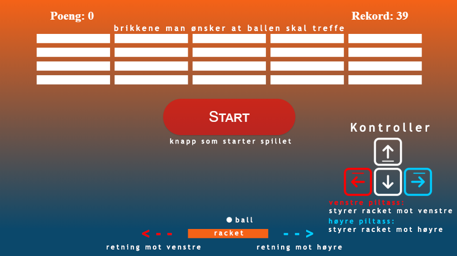
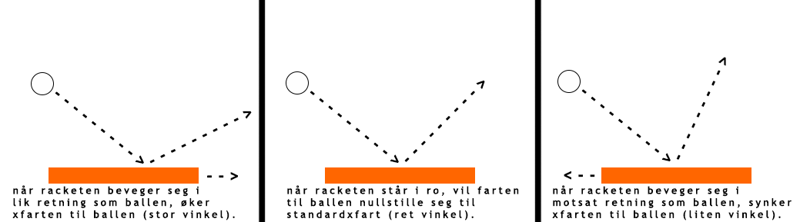

Hva er Valleyway?
Valleway er et spill som går innenfor "Breakout clone" sjangeren. Det første spillet av denne sjangeren kom ut i 1991 på Atari konsollen. Målet med spillet er å få ballen til å treffe brikkene, slik at de forsvinner. For å utføre dette, må spilleren bevege racketen for å "bounce" ballen slik at den ikke fallet ut av bannen (under racketen). Jo fler brikker du treffer, jo fler poeng får man.
Hvordan funker Valleyway?
Spilleren styrer en racket med piltassene. Hensikten med spillet er å få ballen til å treffe brikkene uten at ballen faller ut av banen. Dersom ballen treffer en brikke, forsvinner den og spilleren vil få et poeng. Om spilleren har fått ballen til å treffe alle brikkene i en level, starter det en ny level med nye brikker man skal treffe. Målet for spilleren er å få flest poeng som mulig.
Litt mer om gameplaymekanismen
Ballens tre fartsmoduser:
Utnytt disse modusene, de kan gi deg en fordel.